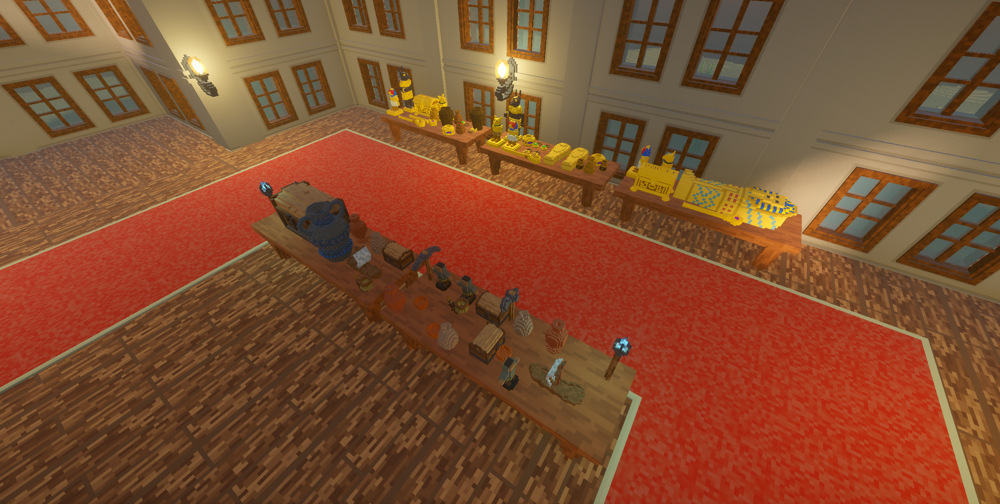
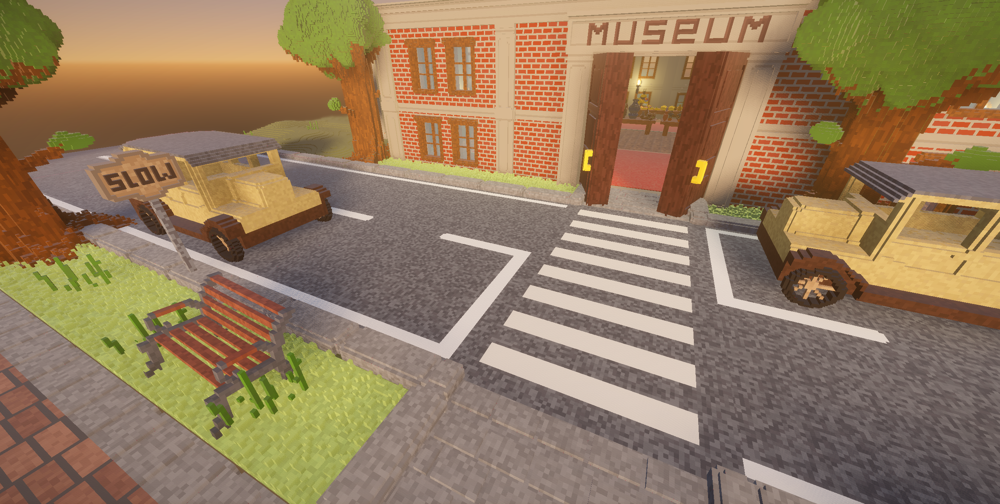
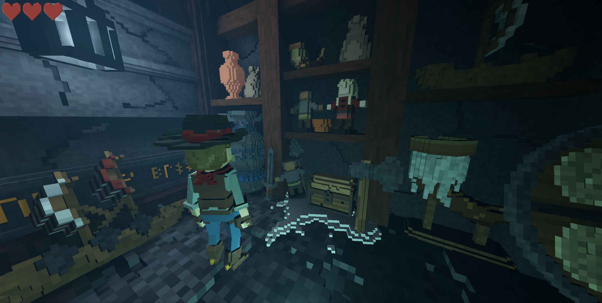
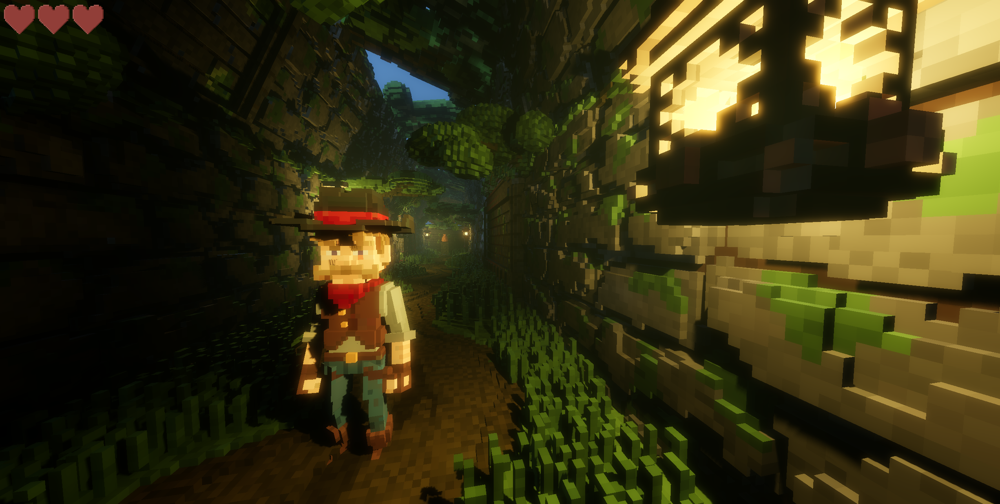
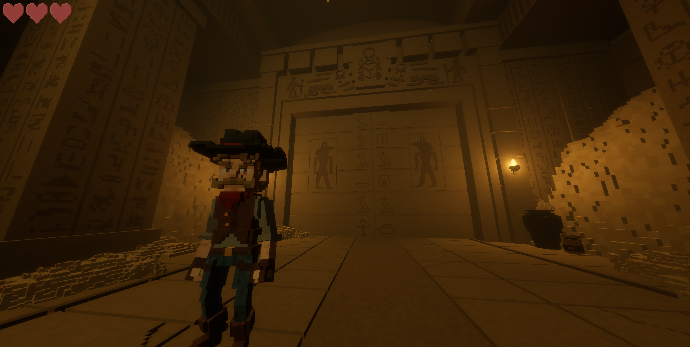
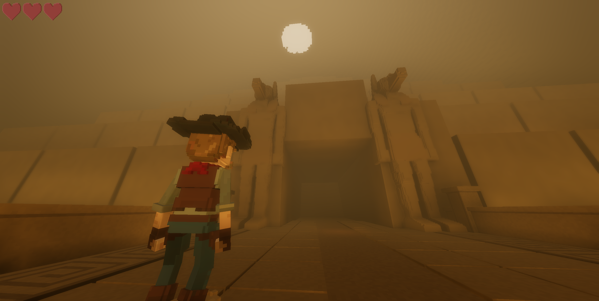

Curate your Collection
The prior curator, Mr. Silus Vane, has mysteriously disappeared. As the new curator, you must follow in his footsteps and expand the collection without succumbing to his same fate.
Advonger Games presents
An adventure game where you run your own museum. Explore ancient temples to gather artifacts. Increase your prestigfe and descend ever deeper.
Curate your Collection
The prior curator, Mr. Silus Vane, has mysteriously disappeared. As the new curator, you must follow in his footsteps and expand the collection without succumbing to his same fate.
Explore ancient temples, solve puzzles, and uncover hidden secrets to acquire new artifacts. Each discovery adds to your collection and brings you closer to understanding the mysteries of the ancient civilizations.
As you expand your collection of artifacts, your reputation and influence grows, opening new opportunities for ever further exploration.
Official trailer
Screenshots






Contact Advonger Games
For any questions about The Great Exhibition, press requests, partnership enquiries, or general updates, email Advonger Games directly.
Contact email: advongergames@outlook.com